01 / НОВАЯ КОМПОЗИЦИЯ · 126 BPM · 1:18
Импульс восьми ветров
Техно с ясным трёхнотным зовом, воздушной серединой и возвращением полного ритма.
ТЕМА НА ТЕЛЕФОН / ВЫПУСК 04
Маятниковый ритм на звонок.
Несколько нот — на сообщение.
Теперь рисунки движутся и звучат.
4 новых трека · 20 SMS + 20 уведомлений · 27 обоев
MP3 · M4R · WAV · PNG. Без регистрации.
Новое: 20 коротких, чётких SMS ↓
15 цветных обоев — Серпинский, Аниматрицы и RGB ↓
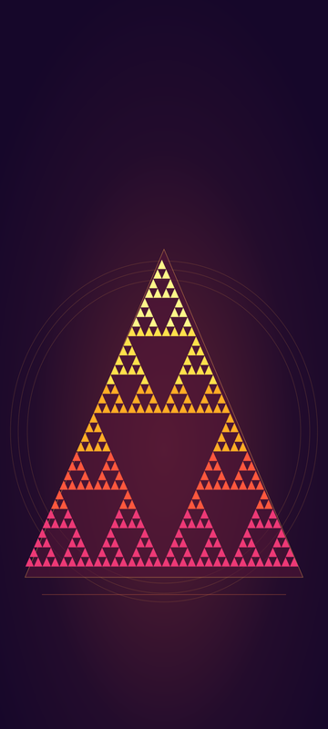
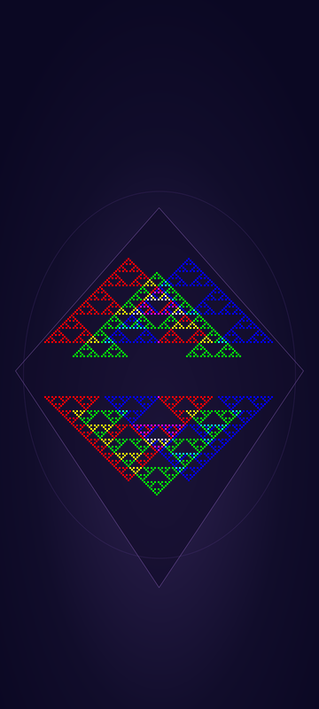
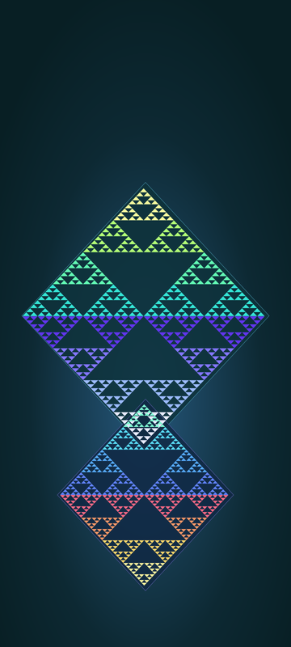
01 / МУЗЫКА И ЗВОНКИ
Две электронные и две камерные композиции. Внутри каждой — короткая версия на звонок.
01 / НОВАЯ КОМПОЗИЦИЯ · 126 BPM · 1:18
Техно с ясным трёхнотным зовом, воздушной серединой и возвращением полного ритма.
02 / НОВАЯ КОМПОЗИЦИЯ · 118 BPM · 1:23
Более медленный пружинистый грув: короткий вопрос, ответ в верхнем регистре и медное эхо.
03 / НОВАЯ КОМПОЗИЦИЯ · 88 BPM · 1:18
Камерная пьеса для синтетического фортепиано и струнных: плавная тема, тихий ответ и светлая реприза.
04 / НОВАЯ КОМПОЗИЦИЯ · 76 BPM · 1:17
Спокойный минорный ноктюрн: редкие высокие ноты над прозрачным арпеджио, затем тёплый ответ.
Робо-техно · 128 BPM
Скачать MP3Камерная вариация · 84 BPM
Скачать MP302 / КОРОТКИЕ SMS
Двадцать сигналов короче секунды. Одна ясная нота или два быстрых удара: резкое начало, короткий спад, без длинного эха.
Ноты взяты из наших мелодий и заново озвучены с короткой огибающей. Длительность указана в миллисекундах: 250 мс — четверть секунды.
180 мс · Короткая электронная нота
Ноты из «Импульс восьми ветров»
210 мс · Короткая электронная нота
Ноты из «Импульс восьми ветров»
240 мс · Короткая электронная нота
Ноты из «Импульс восьми ветров»
280 мс · Короткая электронная нота
Ноты из «Импульс восьми ветров»
420 мс · Две электронные ноты
Ноты из «Импульс восьми ветров»
190 мс · Короткая электронная нота
Ноты из «Медная орбита»
220 мс · Короткая электронная нота
Ноты из «Медная орбита»
260 мс · Короткая электронная нота
Ноты из «Медная орбита»
300 мс · Короткая электронная нота
Ноты из «Медная орбита»
460 мс · Две электронные ноты
Ноты из «Медная орбита»
200 мс · Короткая фортепианная нота
Ноты из «Письмо двух рек»
230 мс · Короткая фортепианная нота
Ноты из «Письмо двух рек»
270 мс · Короткая фортепианная нота
Ноты из «Письмо двух рек»
310 мс · Короткая фортепианная нота
Ноты из «Письмо двух рек»
500 мс · Две фортепианные ноты
Ноты из «Письмо двух рек»
210 мс · Короткая фортепианная нота
Ноты из «Тонкий лёд»
250 мс · Короткая фортепианная нота
Ноты из «Тонкий лёд»
290 мс · Короткая фортепианная нота
Ноты из «Тонкий лёд»
330 мс · Короткая фортепианная нота
Ноты из «Тонкий лёд»
540 мс · Две фортепианные ноты
Ноты из «Тонкий лёд»
МУЗЫКАЛЬНЫЕ УВЕДОМЛЕНИЯ
Двадцать фрагментов из шести мелодий, 1,25–3,6 секунды. Название исходного трека и место вырезки указаны рядом.
Маятниковый привод · 2,0 с
Маятниковый привод · 1,5 с
Маятниковый привод · 2,5 с
Маятниковый привод · 1,2 с
Канон двух берегов · 2,8 с
Канон двух берегов · 1,6 с
Канон двух берегов · 3,2 с
Канон двух берегов · 2,4 с
Импульс восьми ветров · 2,4 с
Импульс восьми ветров · 1,5 с
Импульс восьми ветров · 3,0 с
Медная орбита · 2,2 с
Медная орбита · 1,6 с
Медная орбита · 3,2 с
Письмо двух рек · 2,8 с
Письмо двух рек · 1,4 с
Письмо двух рек · 3,4 с
Тонкий лёд · 3,0 с
Тонкий лёд · 1,8 с
Тонкий лёд · 3,6 с
03 / ОБОИ
27 изображений 1440 × 3200 и 27 видео со звуком. Верхняя часть свободнее — под часы. Картинки и ролики без надписей.
ЖИВЫЕ ПОСТРОЕНИЯ · ВЫПУСК 04
Под каждой картинкой — вертикальное видео 720 × 1600, отдельный звук и переход к тому же рецепту в основном «Маятнике». Внутри роликов развиваются настоящие поля: Серпинский, Аниматрица, пары маятников, ромбы и три независимых канала RGB.
Биты выбранных строк задают высоту и гармоники синтезатора. Ритмический рисунок ударных и лад заданы музыкальными правилами. Рабочий темп — 137 BPM; это настройка этой серии, её можно изменить в «Маятнике». Чужая фонограмма в роликах не используется.
Роботизированный голос произносит «ноль», «один» и «Зеркалиус». Это собственный синтез голоса по ориентиру Roboter; в «Маятнике» можно выбрать инструментальное звучание «Биты».
Атлас в цвете · 6 роликов · 37,6 МиБ Атлас ЧБ · 6 роликов · 35,2 МиБ Серпинский · 3 ролика · 5,0 МиБ Аниматрицы · 3 ролика · 4,1 МиБ Маятники · 3 ролика · 11,5 МиБ Ромбы · 3 ролика · 7,5 МиБ RGB · 3 ролика · 8,6 МиБ
Рецепты и файлы Музыкальный ориентир ↗
Видео запускаются по нажатию. MP4 содержит звук и предназначен для просмотра или установки через поддерживаемый телефоном способ видеообоев; автоматической установки со страницы нет. Ролики показывают фрагмент эволюции, бесшовный стык не заявляется.
НОВОЕ / 15 ЦВЕТНЫХ ПОЛЕЙ
Один исходный бит и XOR двух соседей. Треугольник раскрывается на всё меньшие подобные треугольники.
1440 × 3200 · PNG
Единственная единица рождает 32 строки по правилу 90. Каждый бит — XOR двух верхних соседей, цвет меняется по высоте.
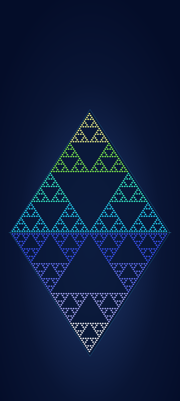
1440 × 3200 · PNG
Один кадр правила 90 повторён дважды. Нижняя копия отражена относительно общей базы, оттенки обеих половин различаются.
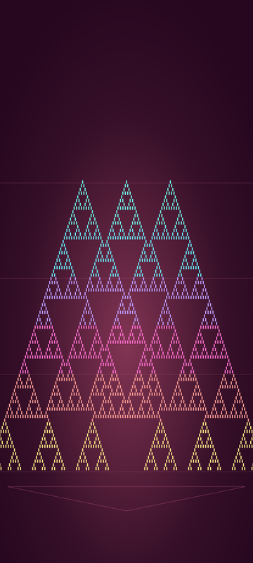
1440 × 3200 · PNG
Правило 90 одновременно развивает три единичных затравки. В местах встречи пары единиц взаимно гасятся по XOR.
Кадры из действующего движка Аниматрицы. Исходная сцена и число шагов сохранены в рецепте каждого изображения.
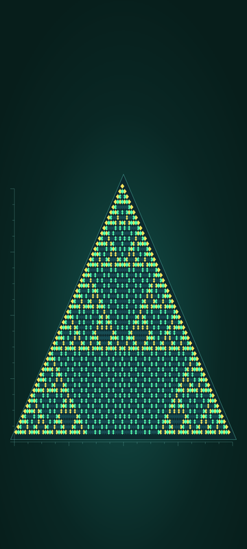
1440 × 3200 · PNG
Режим «Пустоты ↓» отражает строки через межстрочные оси и складывает копии XOR в свободных клетках. Цвет отмечает разницу с исходником.
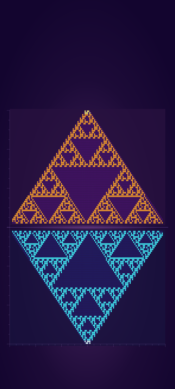
1440 × 3200 · PNG
Исходник «Пример» проходит 110 шагов построчной волны «Клетки XOR». Цвета различают новые, сохранённые и погасшие единицы. Вторая панель зеркальна.
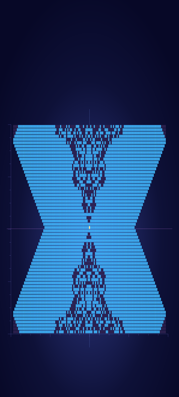
1440 × 3200 · PNG
Один бит в середине запускает режим Excel «Треугольник Маятник». В кадре 75 верхняя и нижняя части растут от движущейся вершины.
Два рассчитанных поля, отражения и задержки. Цвет помогает увидеть вклад каждого построения и места их совпадений.
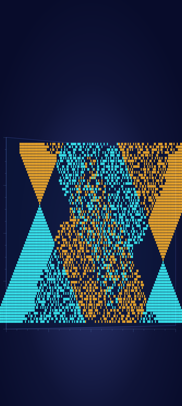
1440 × 3200 · PNG
Обычный и обратный маятники встречаются после вертикального отражения и сдвига B. XOR оставляет единицы, присутствующие только в одном поле.
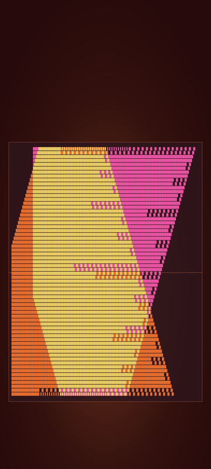
1440 × 3200 · PNG
Левая и правая последовательности вершин встречаются после поворота B на 180°. OR сохраняет объединение, совпадения окрашены светлее.
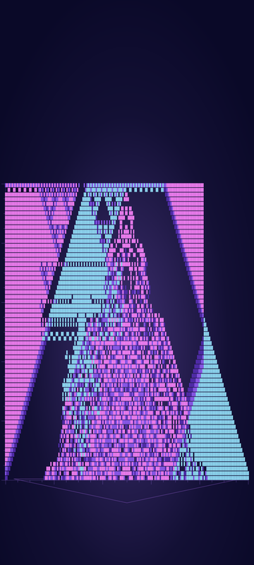
1440 × 3200 · PNG
Обычный маятник сравнивается XOR с отражённой и задержанной последовательностью парных вершин. Яркость следа отмечает возраст клетки за восемь кадров.
Зеркальные треугольники образуют ромбы. Повторение и сдвиг открывают внутренние клеточные узоры.
1440 × 3200 · PNG
Четыре копии треугольника Серпинского образуют два ромба. Каждая пара зеркальна по горизонтальному стыку.
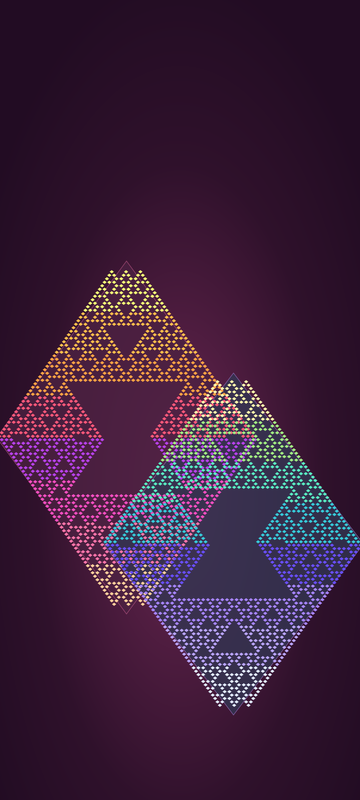
1440 × 3200 · PNG
Четыре треугольных поля с тремя затравками правила 90. Отражённые пары образуют два ромба с разной высотой и палитрой.
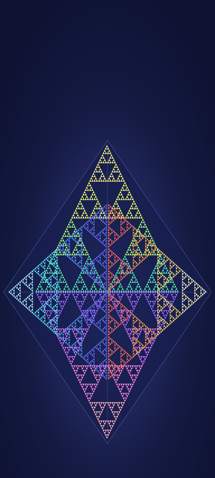
1440 × 3200 · PNG
Повороты и отражения четырёх копий правила 90 сводят их широкие основания к центру. Каждая грань имеет свою палитру.
Три маски управляют каналами R, G и B. RG — жёлтый, RB — пурпурный, GB — голубой; совпадение всех трёх — белое.
1440 × 3200 · PNG
Три копии правила 90 разнесены по горизонтали и высоте. Красный, зелёный и синий складываются до жёлтого, пурпурного, голубого и белого.
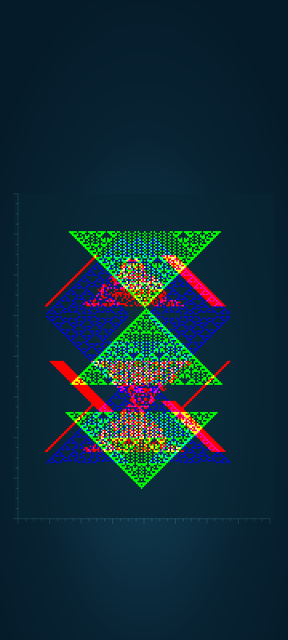
1440 × 3200 · PNG
Каждый канал берёт своё поле. Красный — два маятника XOR, зелёный — отражённые «Пустоты» Аниматрицы, синий — Серпинский с тремя затравками.
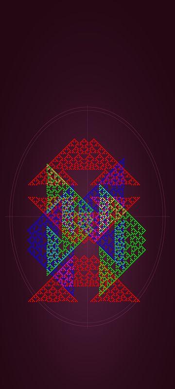
1440 × 3200 · PNG
Три направления одной двоичной маски. Красный канал остаётся вертикальным, зелёный и синий поворачиваются на четверть оборота в разные стороны.
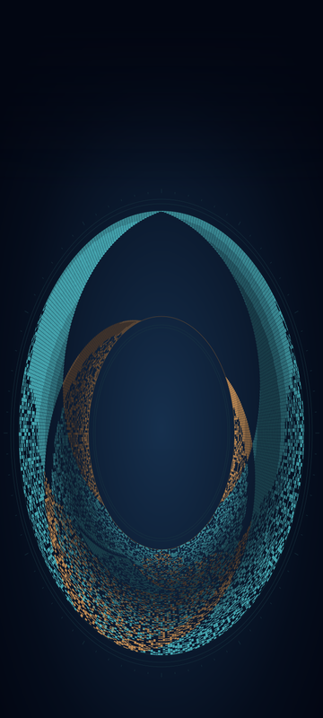
1440 × 3200 · PNG
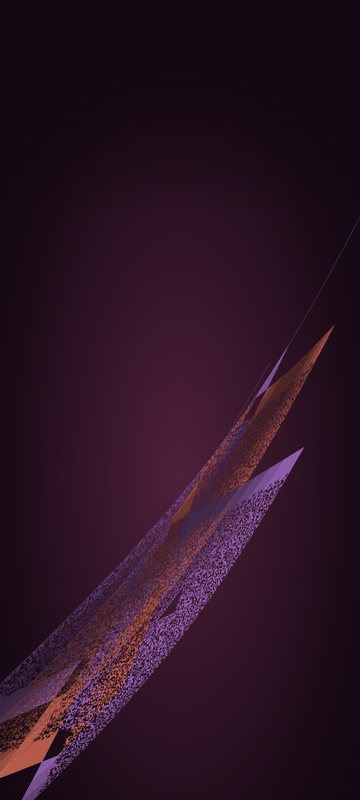
1440 × 3200 · PNG
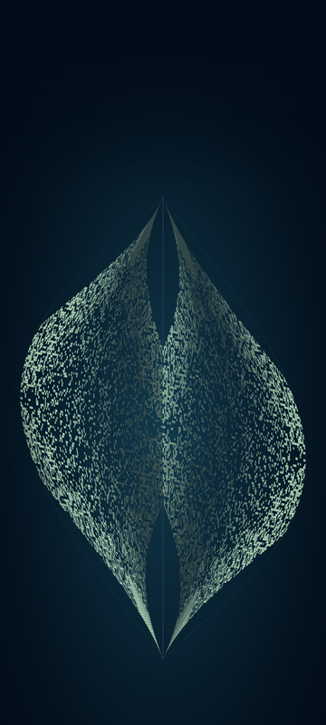
1440 × 3200 · PNG
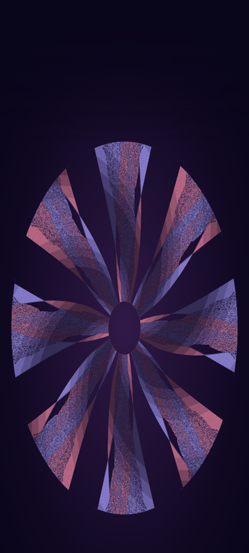
1440 × 3200 · PNG
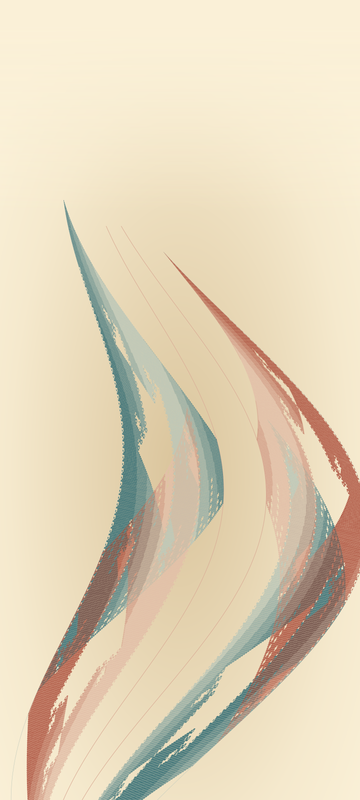
1440 × 3200 · PNG
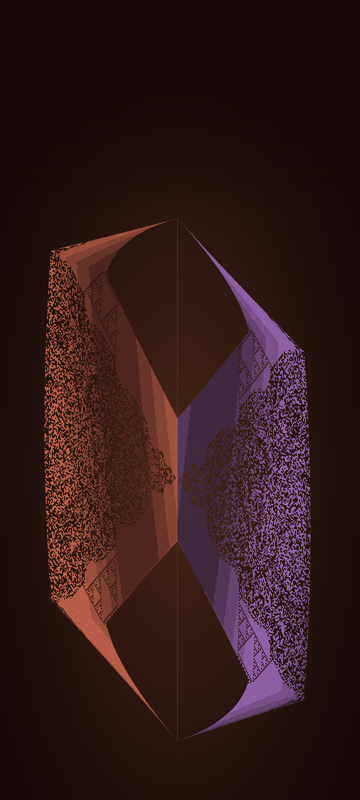
1440 × 3200 · PNG
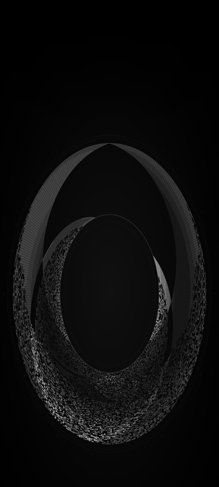
1440 × 3200 · PNG
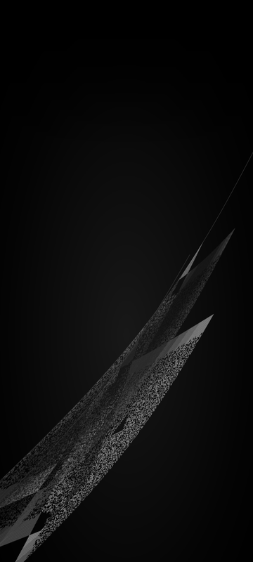
1440 × 3200 · PNG
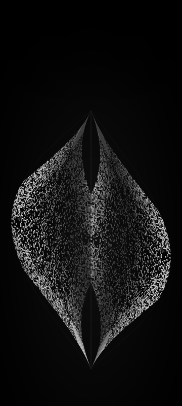
1440 × 3200 · PNG
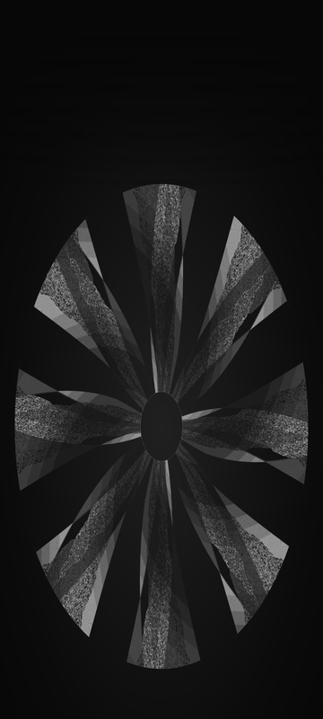
1440 × 3200 · PNG
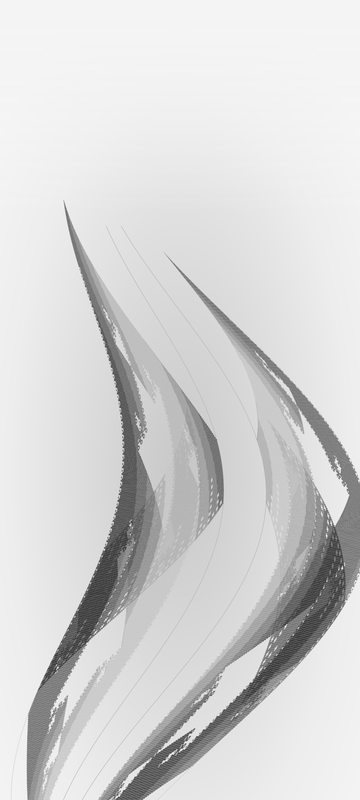
1440 × 3200 · PNG
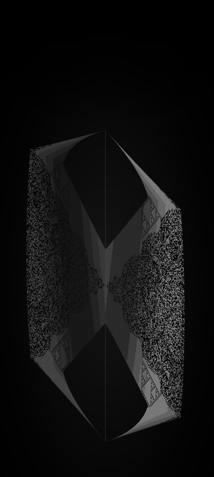
1440 × 3200 · PNG
04 / НА ВАШЕМ ТЕЛЕФОНЕ
Скачайте MP3. Для звонка выберите свой файл в настройках звука; при необходимости поместите его в папку Ringtones. Звук уведомлений выбирается отдельно, иногда в настройках самого приложения. Названия пунктов зависят от телефона.
Инструкция Google ↗Сохраните MP3 в «Файлы», импортируйте его в GarageBand и экспортируйте как рингтон. При экспорте можно назначить звук звонка или сообщения. Здесь версии на звонок короче 30 секунд. M4R приложен для способов переноса, которые поддерживают этот формат.
Инструкция Apple ↗Откройте обои в полном размере и сохраните PNG в фотографии или загрузки. Затем выберите картинку в настройках обоев. Перед установкой подвиньте кадр под часы и значки — пропорции экранов различаются.
ЧТО С ЧЕМ ВЗАИМОДЕЙСТВУЕТ
Два маятника создают клеточные поля A и B. Сдвиг, отражение, задержка и операция наложения меняют общий рисунок. Например, XOR оставляет несовпадения, а AND — общие единицы.
В музыке гармония, мотивы и форма сочинены отдельно. Данные полей участвуют в изменении нот, акцентов и звучания. Музыкальные уведомления — вырезки из готовых композиций с мягкими краями. Короткие SMS — отдельные ноты этих мелодий, заново синтезированные с быстрым затуханием. Обои используют геометрию тех же построений в вертикальной художественной композиции.
Предыдущие композиции и видео с маятниками ↗
Маятниковый атлас ↗
Открыть Синтез ↗